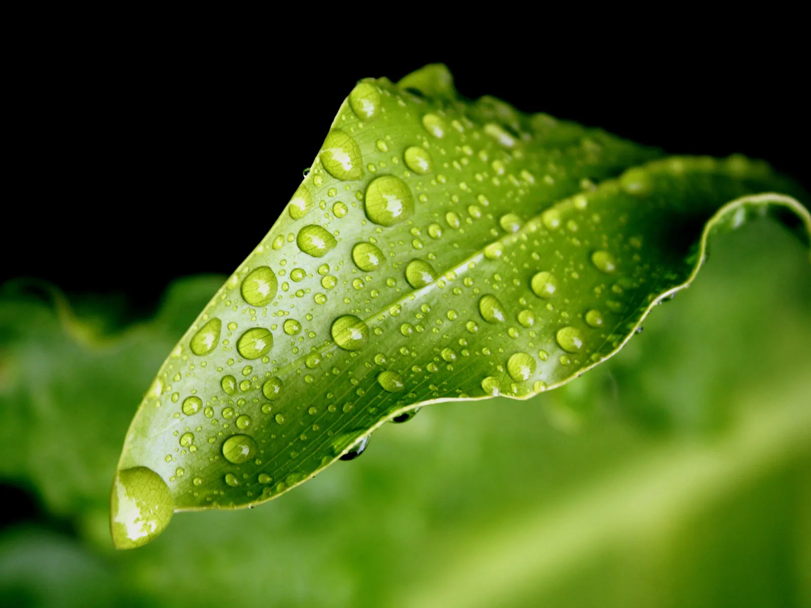
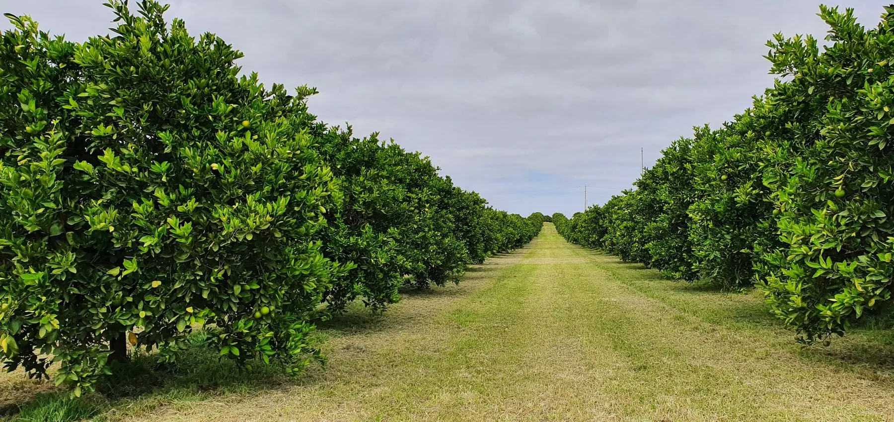

Place
Record the paddock, block, row or defined zone. Keep unusual areas separate unless the purpose is to sample the whole paddock or block.

Record where and when the sample was taken, what was sampled and how it was handled, and keep those details with the original test report. That gives you and the team a reference for reviewing changes over time and deciding what to do next.
Before collecting anything, decide which area the result needs to describe and what you want to investigate. That might be an orchard block, a paddock zone, a group of vines or a vegetable crop at a particular growth stage.
Areas with different soils, drainage or management history may need separate samples. Mixing them can hide a difference you wanted to understand. Arrange the current kit and confirm the instructions for your crop and test with the team before sampling.
This guide explains which details to record with the sample. It does not replace crop-specific laboratory or agronomic sampling instructions.
Keep these details with the original report so they are available when you need to review it. They help with interpretation and comparison, but cannot make up for a sample that does not represent the area being tested.
Record the paddock, block, row or defined zone. Keep unusual areas separate unless the purpose is to sample the whole paddock or block.
Identify exactly what was sampled: soil depth or layer, plant tissue, water source or harvested produce. For differential sap, keep the young and old material separately labelled.
Record the date, crop stage and recent conditions. Plant and produce results need the biological stage as well as the calendar date.
Use consistent locations, tissue, stage, timing and method when comparing results over time or between areas.
Match the sample identity on the bag and submission form. Follow the current collection, storage and delivery instructions so the sample reaches the laboratory in the intended condition.
Use a location name or number that makes the source of the sample easy to identify, whichever cropping system you work in.
Keep crop, variety or rootstock, crop load, stage and block identity with the sample.
Record the paddock or block reference with crop, variety, rotation and growth stage.
Identify different paddock zones and record sampling points that can be used again.
Record variety or rootstock, production target, crop load, growth stage and block history with the result.

Store the original report with its sample details under a consistent paddock or block reference. Keep earlier reports too, rather than rely on the latest figures alone.
A different sampling depth, leaf age, growth stage or laboratory method can affect the figures. Keep those details so the agronomist can check whether two results can reasonably be compared.
Record relevant changes in weather, irrigation and recent applications too. Bring that history to the discussion. The team can use it when considering Nutrient requirements and a prescription blend, and return to it when reviewing later results.
Confirm a sampling approach